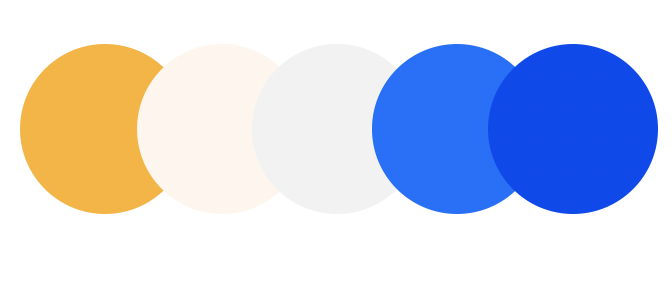
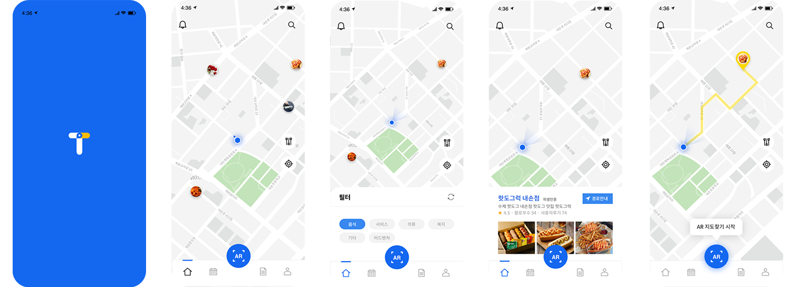
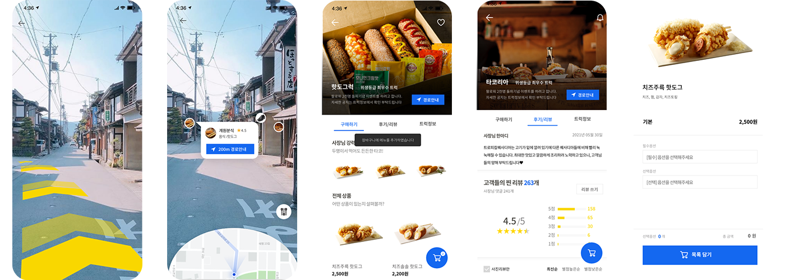
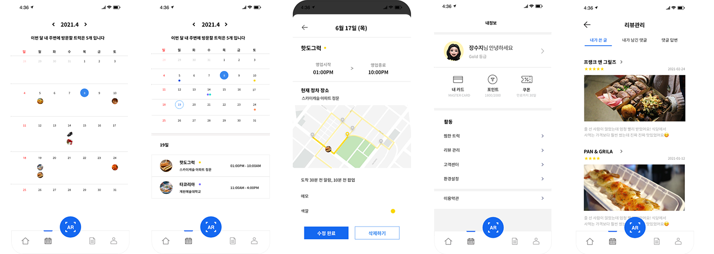

TOWARD-
APPLICATION DESIGN
타코야끼 트럭, 꽃 판매 트럭 등 길거리의
트럭마켓들의 위치를 추적해주는 앱이다.
트워드는 지정한 트럭의 위치를 추적해 길안내를
해주거나 근방에 접근시 푸시알림을 제공하며
이용한 트럭의 후기를 사용자들과 공유할 수 있다.
트워드의 경로탐색, 트럭일정, 상품주문 등의 페이지를
디자인하였다.
| |
MAIN COLOR트럭을 연상시키며 신뢰성, 견고함을 나타내는 Blue 파란색과 대비되며 희망적인 의미를 노래하는 Yellow 차분함을 더하기 위해 톤 다운된 Beige  |
|  | |
|  | |
|  | |